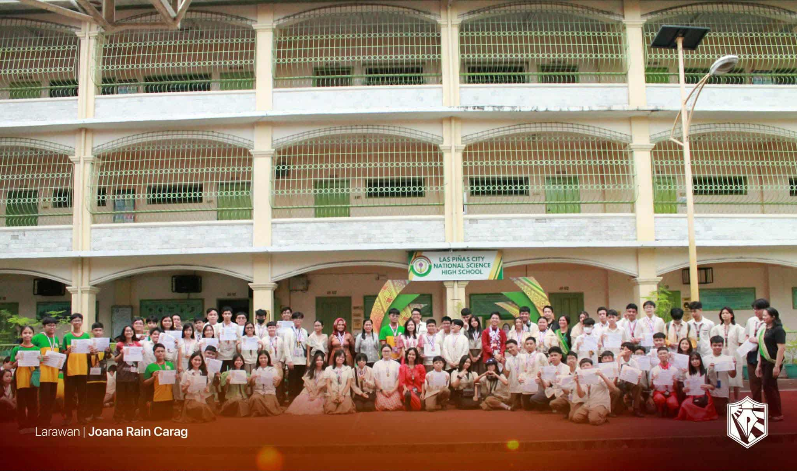

2025-2026
Participating in AP Month at LPSCI was an enriching experience that helped me better understand ASEAN countries and important social issues like population development. I actively joined the celebration by wearing traditional ASEAN attire, which made the event more colorful and meaningful. I also took part in the quiz bee about population development, which challenged me to think critically about how population trends affect our society and region. These activities deepened my knowledge and made me appreciate both the diversity of ASEAN cultures and the shared challenges we face as neighboring nations.
If I were to teach this to a classmate, I would begin by explaining the goals of AP Month and the significance of learning about population development and ASEAN cooperation. I would include engaging activities like quizzes, group discussions, and cultural presentations to help make the lessons more interactive and memorable. Celebrating AP Month is important because it teaches us to be informed, responsible, and culturally aware citizens of Southeast Asia. In real life, I can apply what I learned by staying updated on social issues, being respectful of other cultures, and supporting initiatives that promote regional understanding and development. 🌏🎉
